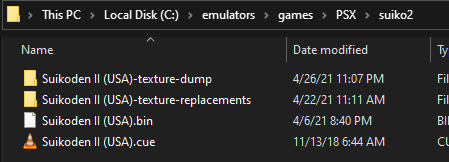
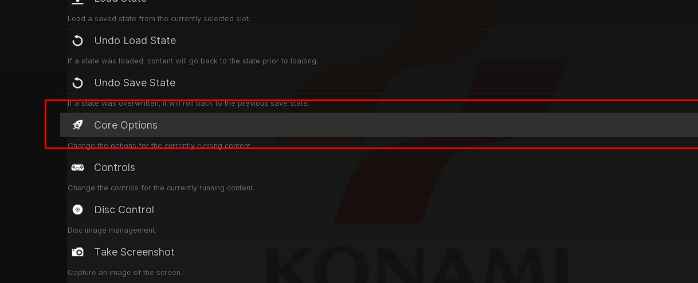
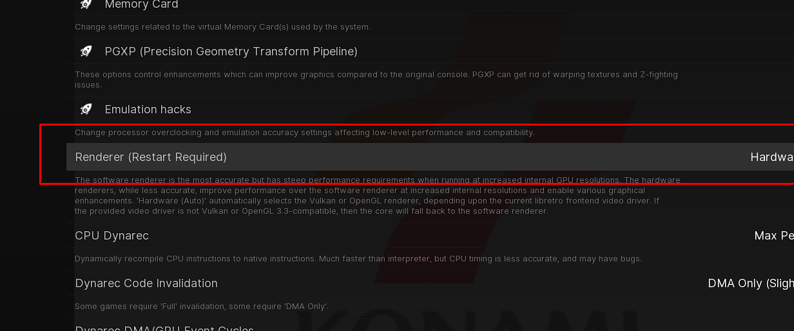
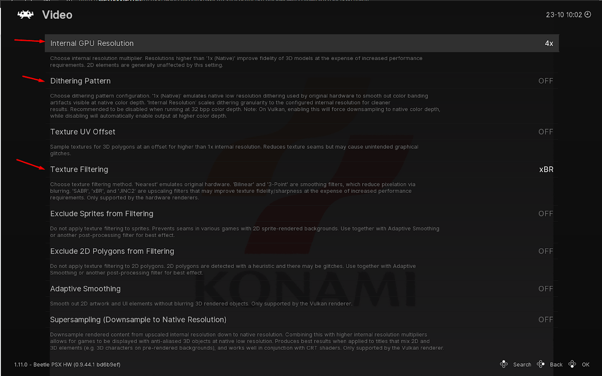
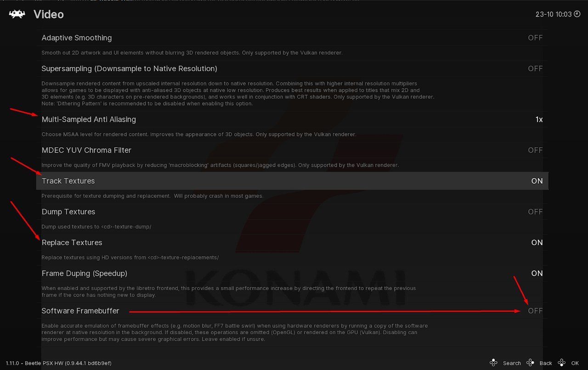

Project Kyaro: Suikoden II PSX Texture Overhaul.
Project Kyaro (PSX) is the pioneering texture replacement and visual overhaul framework for Konami's timeless masterpiece, Suikoden II. Built for Beetle PSX HW and DuckStation via RetroArch, it delivers 161 high-definition character portraits, remastered user interface assets, world map textures, and restored typography while preserving authentic PlayStation hardware rendering.
Download Links & Releases
Direct downloads and repository links for Project Kyaro v2.6, beta builds, and bonus packages.
Project Kyaro V2.6
Complete texture replacement pack including 161 portraits, international accented text, ending backdrops, and battle UI textures.
Download Mod V2.6 (Dropbox)Beta Version (Experimental)
Live Google Drive directory containing experimental textures, upcoming character overhauls, and work-in-progress test assets.
Browse Beta Drive Folder →GameShark / Action Replay
Curated cheat collection with 80+ essential codes for money, stats, no encounters, and strategic war battle advantages.
Download Cheats ZIP (.zip)Pyriel's GS2 Bugfixes
Community patch resolving vanilla softlocks, sound bugs, and the infamous Matilda Gate glitch. 100% compatible with Project Kyaro.
Pyriel GS2 Bugfixes on GitHub →Video Showcase & Guides
See Project Kyaro in motion across Beetle PSX HW's texture replacement engine, and watch the official feature video by the LibRetro team.
RetroArch: Beetle PSX HW - Texture Replacements
Official LibRetro showcase featuring Project Kyaro textures running under hardware acceleration on RetroArch.
Enhanced xBR Experience for Suikoden II
In-depth demonstration of neural-upscaled textures with xBR filter shaders, UI overhaul, and seamless portrait transitions.
Project Objectives & Visual Philosophy
Inspired by the community texture upscale project of Chrono Cross, Project Kyaro replaces in-game textures that are neural-upscaled via Waifu2x and Topaz Gigapixel, sitting gracefully on top of RetroArch's xBR shader filtering.
The main objective is to enjoy Suikoden II with reduced pixelation for an HD-ish / Remastered aesthetic on modern screens. However, for pixel purists who want to keep the raw 32-bit pixel art intact, you can simply set Texture Filtering to Nearest Neighbor—allowing the high-resolution character portraits and fonts to shine while retaining original environmental pixels.
Project Kyaro was officially showcased by LibRetro / RetroArch in their Beetle PSX HW texture replacement demonstration!
Features & Version History
Changelog Tracked- Internationalization Support: Added accented text characters, opening full support for localized European and international ISO copies.
- 161 Character Portraits: Added handcrafted contrast outlines to 161 character portraits across the 108 Stars of Destiny.
- In-Game UI & Environments: Revamped war battle operational text, in-game background UI textures, and high-definition ending backdrops.
- Ending Backdrops: Added high-definition ending background art and additional battle backgrounds.
- Rune Transparency: Cleaned up alpha channel fringing and fixed transparency bugs on various spell and head runes.
- Added specialized portrait assets for Pilika, Neclord, Jowy Atreides, and Julia.
- v1.0 Initial Public Release: Neural-upscaled portraits, high-res Konami boot logo, and initial text support.
- Alpha: Experimental character portraits upscale prototype (unreleased).
Installation & RetroArch Core Setup Guide
Follow these exact configuration steps and reference screenshots to enable hardware texture replacement.
Ensure you have the latest RetroArch installed with the Sony - PlayStation (Beetle PSX HW) core.
- Required BIOS files (e.g.
scph5501.bin) must be placed in your RetroArchsystem/directory. - A clean Suikoden II PSX game ISO / BIN & CUE pair.
Keep your main BIN / CUE files inside their own dedicated game folder. Crucial: Make sure the filename of your game exactly matches the filename defined inside the .cue file. Create two companion folders alongside your game files:

-texture-dump and -texture-replacements folders
Click to Zoom
A lot has evolved in RetroArch's menu over the updates. Follow these steps carefully with the in-game reference screenshots:
Step 3A: Accessing Core Options
Launch Suikoden II and press F1 to open the RetroArch Quick Menu. Scroll down and enter Core Options.

Step 3B: Set Hardware Renderer to Vulkan
Under Core Options, set Renderer (Restart Required) to Hardware (Vulkan). Close and restart RetroArch so the Vulkan driver initializes.

Step 3C: Video Resolution & Texture Filtering
Press F1 again, go to Core Options → Video, and adjust the following key parameters:

Step 3D: Texture Tracking, Replacement & Framebuffer
Scroll further down in the Video menu and configure the texture replacement engine:

Compatibility & Bugfix Patches
Project Kyaro is 100% compatible with files patched with Pyriel's community bugfixes, which resolve vanilla softlocks, sound bugs, and the infamous Matilda Gate glitch:
Pyriel's GS2 Bugfixes on GitHub →80+ Curated GameShark / Action Replay Codes
Hand-curated overtime to assist testing, screenshot staging, and overcoming grueling war battle encounters.
8006AA5A 0098
8006AA42 0000
8004B23A 0909
8009F40A 0009
Community, Acknowledgements & Credits
• Suikosource Forums: Heartfelt gratitude to the Suikosource community for hosting the original project discussion and feedback threads.
• Asset Contributions: Special thanks to @luizpedro (Pinterest) and @DocOwer (Twitter) for rune and art assets.
• Tools: Neural upscaling powered by Waifu2x and Topaz Gigapixel AI.
• LibRetro Team: Heartfelt appreciation to the RetroArch & Beetle PSX HW core maintainers for their pioneering hardware texture replacement feature.